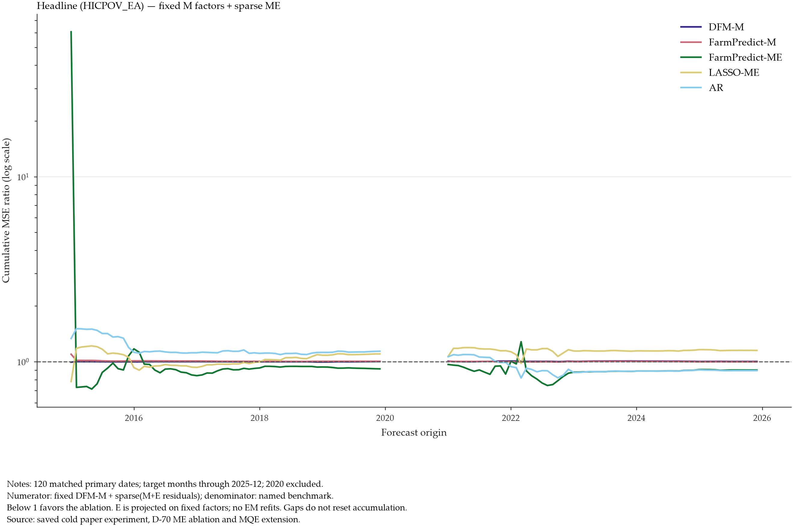
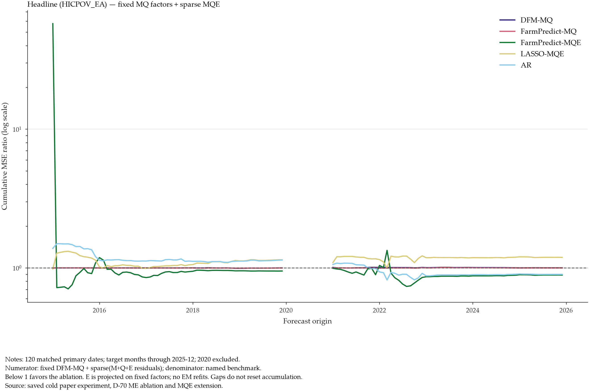
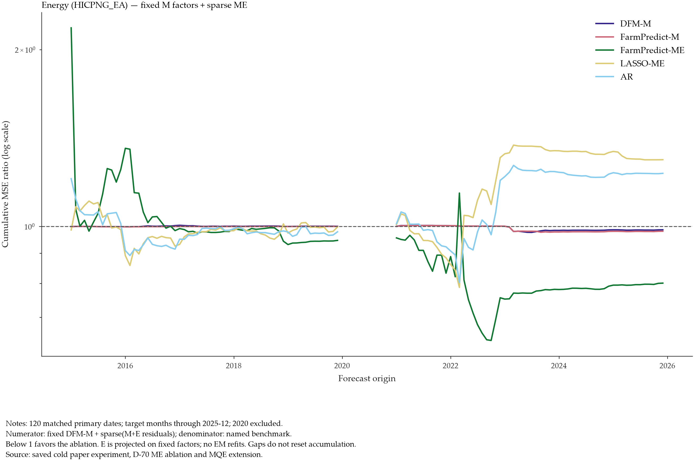
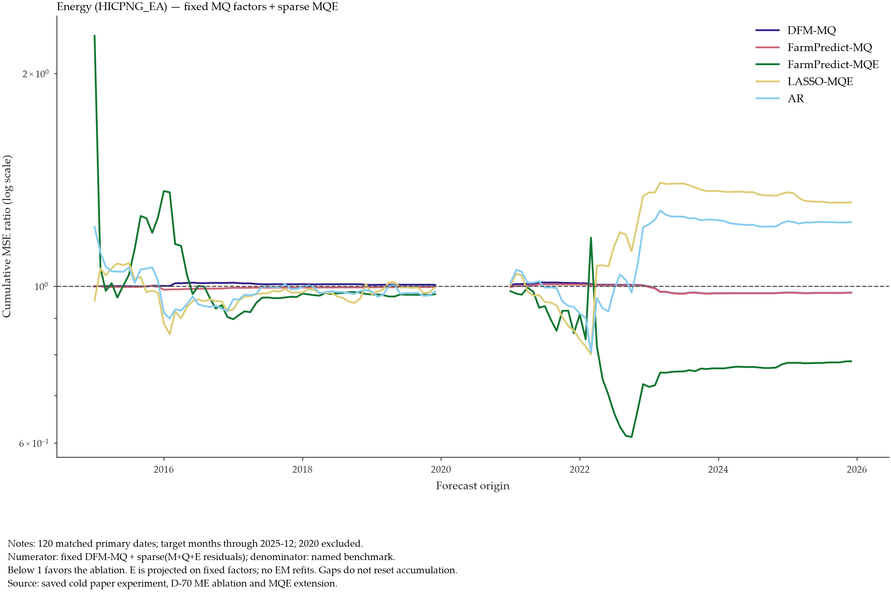
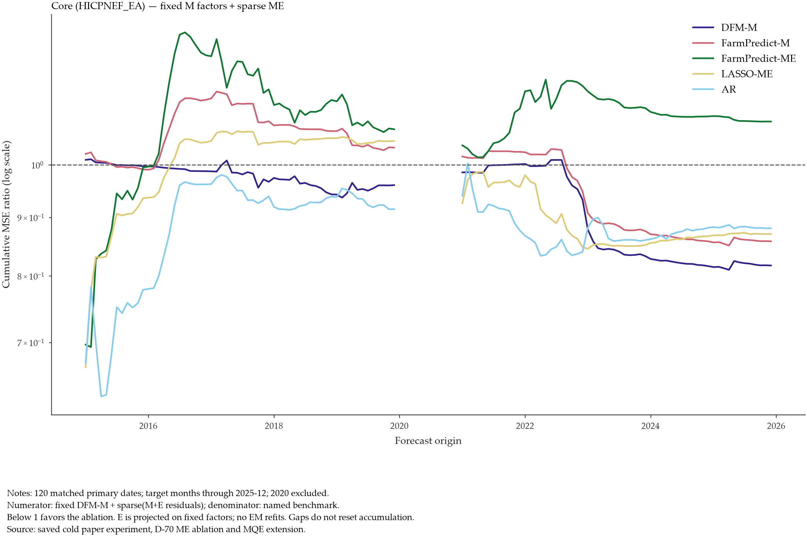
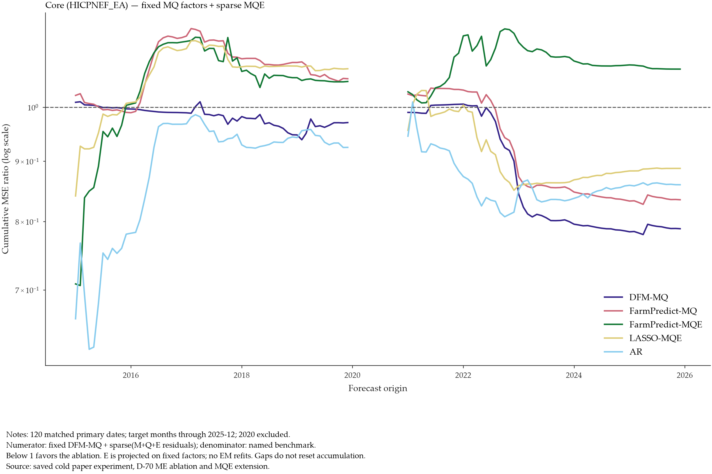

Four original targets; 2020 excluded. Ratio below one favors the fixed-factor ablation. ME keeps M factors; MQE keeps MQ factors. External predictors are residualized, not raw. FarmPredict labels in these graphs refer to the DFM variant. Logarithmic vertical axis.





